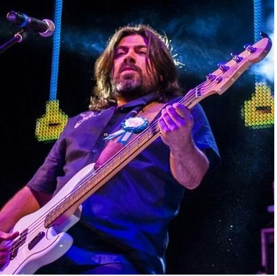

Gregorio Ruescas
Greg ruescas, nacido y criado en Villarrobledo. Tiene 43 años y ha mamado la musica desde muy pequeño. En 2010 se unió a el grupo "El Rincón de Los Sueños" ya que conoció a Toño Cabañero en una clase de Trompeta. Se unio a sus 2 hermanos Agustin (Bateria) y Quique (Guitarra).

Jose Sanchez
Jose Sanchez, guitarrista de vuelo fidji, 44 años, combina su trabajo de soldador en la empres Parcitank, con su gran aficion que es tocar la guitarra. Originario de Villarrobledo, se unio al grupo en 2010 y fue uno de los fundadores junto con Toño Cabañero. Aparte toca tambien el bajo y hace los arreglos de las canciones.
Proximos Conciertos
- Mayorga (Valladolid)- 31 de Mayo- Sala Secretos
- Madrid- 2 de Junio Live in Los Carmenes
- Villarrobledo- 28 de Junio- Jardinillos Municipales